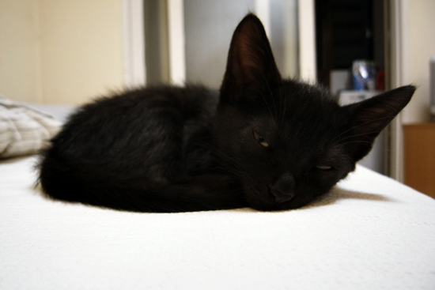

네 놈이 내 집사로구나.
(처음 만난 지 며칠 지나지 않은 9월 초 어느 날 모습)
온수 방면 어느 거리를 어슬렁거리던 녀석이 노원에 왔으니 7호선 종점 사이를 가로질러 내게 도착한 셈이다. 3개월 된 남아고, 함께 산 지 6주가 지났다. 첫날부터 낯가림도 없이 사료와 물 넙죽 받아먹고 한가로이 침대로 기어 올라가 주인 행세를 하던 뻔뻔한 녀석. 성격만큼이나 시크한 올블랙의 외양을 하고 있으나 품종묘가 아닌 길냥이 출신인데, 기생충 하나 없이 건강한 것을 보면 역시 잡종은 힘이 세다.
함께 사는 친구가 '간장'이란
, 다소 일차원적 네이밍인 듯하지만 부르기에 나쁘지 않은, 이름을 붙여주었다. 애타게 불러도 콧방귀만 뀔 뿐인 건방진 고양이 족속이긴 하지만, 싱겁고 무료한 일상에 조금은 짭짤한 간이 배지 않을까 기대하고 있다.